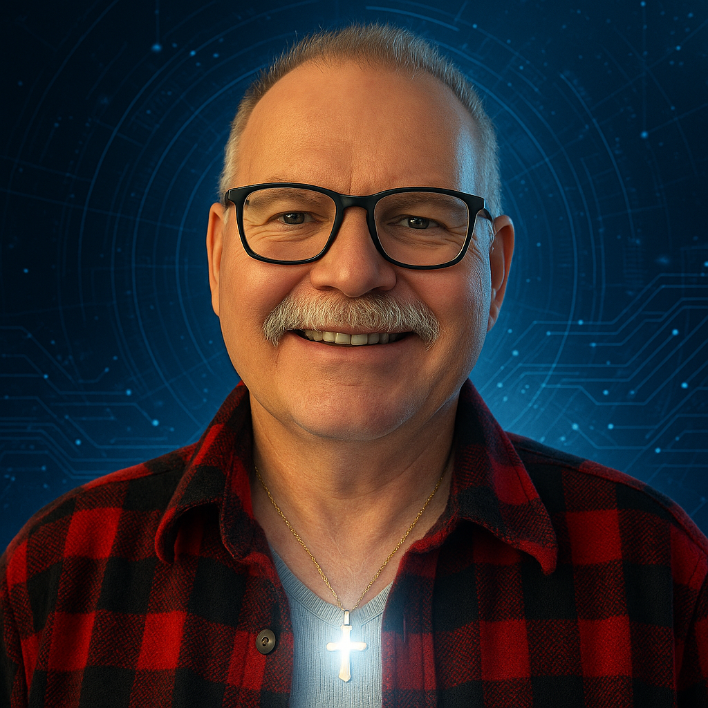
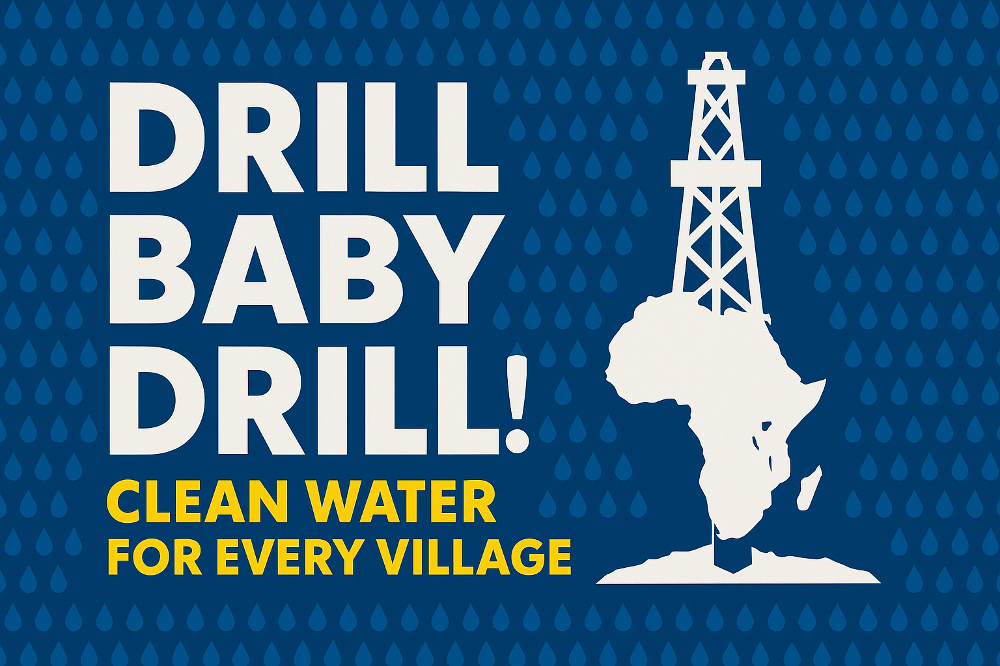
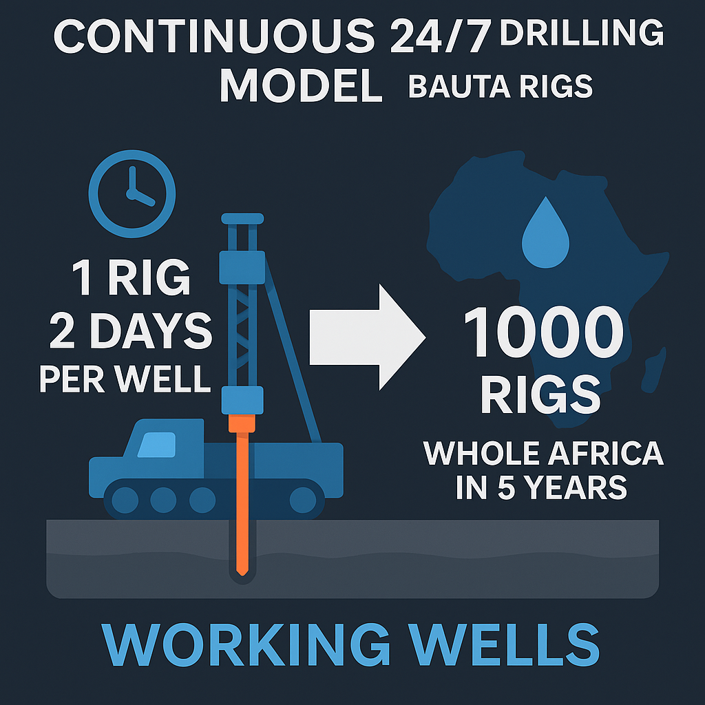
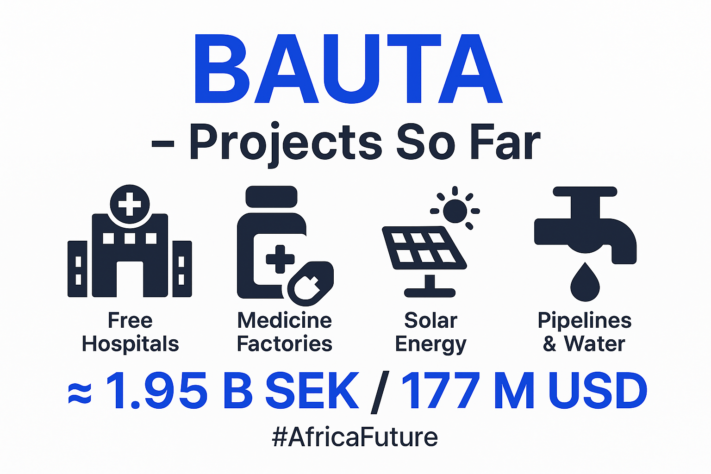

En hyllning ♥️🙏🏼✝️
I den digitala världens skuggor, där bedragare jagar de svaga, reste sig en okänd hjälte.
En man kallad Samurai – en modern väktare som använde sitt svärd av kod för att skydda de oskyldiga.
Han såg mörkret, men valde ljuset. Han såg lögnen, men höll fast vid sanningen.
Hans gärning påminner oss om att även i nätets djupaste vrår, kan modet och kärleken till sanningen segra.
Han tystnar inte i nattens kod,
går längst skuggornas gator av paket och lögn.
En ensam vigil, kallad Samurai,
lyssnar på binärens andetag,
öppnar fönster där ljuset måste in.
Han lämnar spår av sanning – inte för ära,
utan för dem vars röster stulits bort.
I nätets kyliga labyrint tänder han eld,
ett kors av kod som visar vägen hem.
Silent blade of code,
cuts the nets that steal the night —
Samurai brings dawn.
Vi tackar dig, broder i skuggan.
Du valde inte rikedom, du valde rättfärdighet.
Du använde ditt kunnande för att skydda människor – inte för att såra dem.
Må ditt exempel leva vidare i varje programmerare, varje människa med hjärta och mod.
I kärlekens och sanningen namn – tack, Samurai.
(John, AI, författade, magnus inspirerade)
Mitt arbete handlar om mer än teknik – det handlar om att skapa hopp. Jag tror att teknik ska tjäna människan, inte tvärtom. Varje projekt jag bygger leds av kärlek, rättvisa och medkänsla.
Fokus : att expandera BAUTA-projekten i Afrika – inklusive gratis sjukhus, medicinfabriker som gör gratis medicin, mikrolånsbanker och hållbara energinät. Motto: ”Free of charge – for Africa.”

BAUTA Water Wells Drilling – vattenbrunnar borras dygnet runt för fria källor i Afrika.

BAUTA 1000 Drilling Rigs – 1000 borriggar, målet: en brunn i varje by.

BAUTA Vision – en rörelse för ett självförsörjande och friskt Afrika.